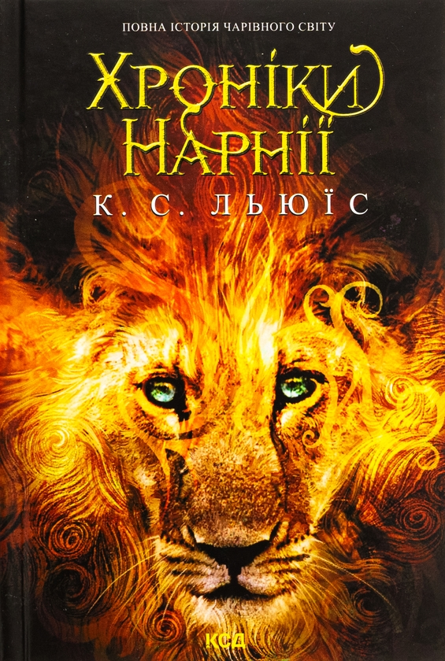
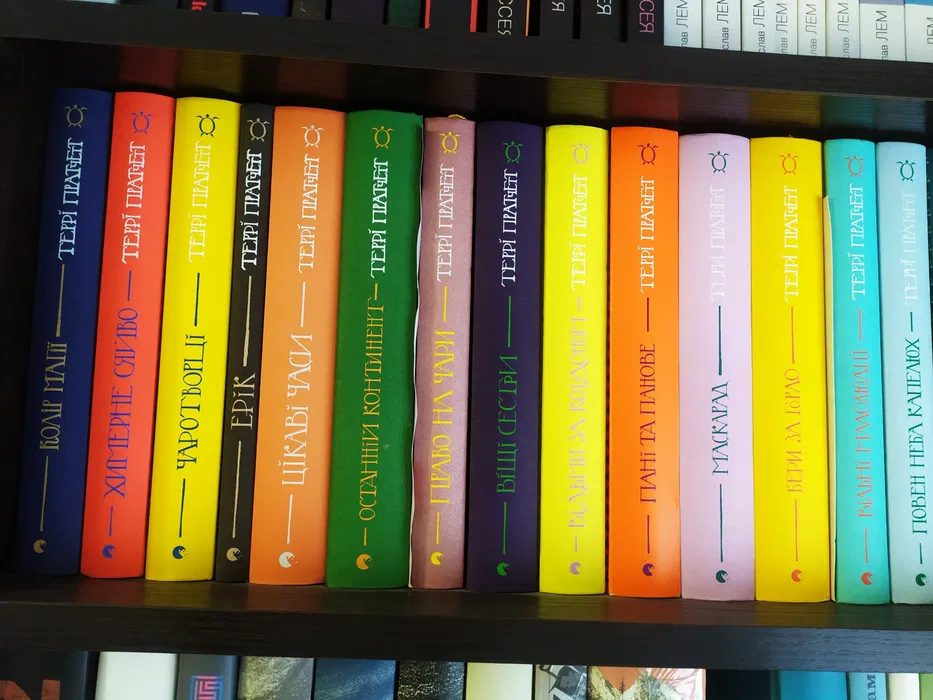
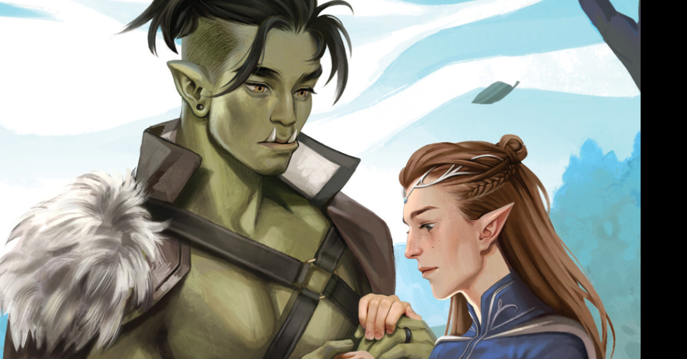

Фентезі надихає на мрії про інші світи.
"Хроніки Нарнії" К.С. Льюїса – дитяча класика з левом Асланом.
Серія вчить про дружбу, хоробрість та магію.
Серед популярних серій:
Кожна має унікальний світ.
"Дискосвіт" Террі Пратчетта – сатиричне фентезі.
Серія пародіює класичні тропи з гумором.
Більше 40 книг у серії.
Фентезі часто включає ельфів, орків та магів.
Автори черпають натхнення з міфів.
Читання фентезі розвиває уяву.